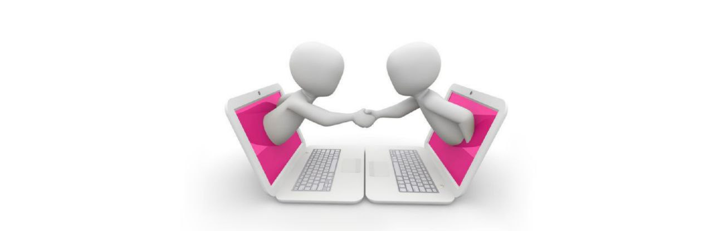

<!DOCTYPE html>
<html lang="ru">
<head>
<title>Правила поведения в интернете</title>
<meta charset="UTF-8">
<meta name="viewport" content="width=device-width, initial-scale=1">
<style>
body {
  font-family: Arial, Helvetica, sans-serif;
}
.header {
  padding: 80px; 
  text-align: center; 
  background: #b366ff; 
  color: white; 
}


.header h1 {
  font-size: 40px;
}

.navbar {
  overflow: hidden;
  background-color: #333; 
}

/* Стиль ссылок на панели навигации */
.navbar a {
  float: left; 
  display: block; 
  color: white; 
  text-align: center;
  padding: 14px 20px;
  text-decoration: none; 
}


.navbar a.right {
  float: right; 
}


.navbar a:hover {
  background-color: #ddd; 
  color: black; 
}

* {
  box-sizing: border-box;
}


.row {
  display: flex;
  flex-wrap: wrap;
}


.side {
  flex: 30%; 
font-size: 120%;
  background-color: #f1f1f1; 
  padding: 20px; 
</head>
<body>

</body>
</html>
<div class="header">
  <h1>Правила поведения в интернете</h1>
</div>


<div class="row">
  <div class="side"><em><strong>Обо мне</strong></em>
<li><font size="2">Автор - Рахманина Виктория Сергеевна.</li>
<li><font size="2">Место обучения - МБУ СОШ №8 имени Бусыгина М.И.</li></div>


 <div class="main"><div align="center"><em><strong>Зачем нам правила поведения в интернете?</strong></em></div>
   <div align="center"></div>
<br><font size="5">Сетевой этикет — это набор правил и норм поведения, которые регулируют взаимодействие людей в онлайн - среде. Он включает в себя: правила вежливости, уважения, конфиденциальности и безопасности, при использовании интернета и социальных сетей. </font></br>
<br><font size="5">Владеть сетевым этикетом важно, чтобы обеспечить здоровое и конструктивное общение, предотвращать конфликты и способствовать созданию приятной и безопасной онлайн-среды.</font></br>
<ul>
  <li><a href="#name_link_1">Что такое</a> сетевой этикет.</li>
  <li>Правила поведения <a href="#name_link_2">в личной переписке.</a></li>
  <li>Правила поведения <a href="#name_link_3">в сообществах.</a></li>
  <li>Правила поведения <a href="#name_link_4">по звонку или другому виду связи.</a></li>
</ul>

<div align="center"><br><strong><h2><a name="name_link_1">Что такое сетевой этикет.</a></h2></strong></br></div>
<br><font size="5">В современном мире люди привыкли к взаимодействию в интернете. Это привело к созданию правил поведения в Мировой сети -<span style="background-color: #d4d4d4"> Сетевой этикет.</span></font></br>
<br><font size="5">Онлайн-среда стала местом, где мы общаемся, делимся информацией, ищем новости, работаем и проводим свободное время по интересам. Однако, как и в реальном мире, существуют правила и нормы, регулирующие поведение в Сети. Эти правила известны как сетевой этикет.</font></br>
<br><font size="5"><span style="background-color: #d4d4d4">Сетевой этикет </span>(сетикет или нетикет) — это набор принятых общепризнанных норм и правил поведения, которые помогают нам вести себя в онлайн-среде вежливо, уважительно и этично. Сетевой этикет включает в себя различные аспекты, такие как уважение к частной жизни, соблюдение авторского права, правильное использование электронной почты, социальных сетей и форумов, а также соблюдение правил безопасности и конфиденциальности данных.</font></br>
<br><font size="5">Владение сетевым этикетом даёт ряд важных преимуществ. Во-первых, следование этикету способствует созданию гармоничной и приятной онлайн-среды. Сетевой этикет помогает предотвратить конфликты, споры и неприятные ситуации, которые могут возникнуть из-за неправильного поведения или неверного толкования сообщений. Он позволяет участникам сетевого взаимодействия чувствовать себя комфортно и безопасно.</font></br>
<br><font size="5">Во-вторых, владение сетевым этикетом способствует улучшению качества коммуникации. Правильное использование сетевого этикета позволяет ясно и точно выражать свои мысли и идеи, быть внимательными к другим участникам диалога и уважать их право на собственное мнение. Это способствует более продуктивному обмену информацией, конструктивным дебатам и решению проблем</font>
</br>
<div align="center"><br><strong><h3><a name="name_link_2">Правила сетевого этикета в личной переписки.</a></h3></strong></br></div>
<br><font size="4"><strong><span style="background-color: #d4d4d4">Личная переписка в интернете требует особого внимания к этике и уважения к другим участникам. Вот пять правил сетевого этикета, которые следует соблюдать при общении в личных сообщениях:</span></strong></font></br>
<li class="stk-reset stk-list-item" data-ce-tag="list-item"><font size="5"><strong class="stk-reset">Уважайте приватность и&nbsp;согласие.</strong>Перед началом личной переписки убедитесь, что другой человек согласен и&nbsp;хочет общаться с&nbsp;вами. Не&nbsp;нарушайте приватность и&nbsp;не&nbsp;делитесь личной информацией другого человека без разрешения. </font></li>
<li class="stk-reset stk-list-item" data-ce-tag="list-item"><font size="5"><strong class="stk-reset" data-gtm-vis-has-fired-10171822_255="1">Будьте вежливы и&nbsp;терпимы.</strong>Всегда проявляйте вежливость и&nbsp;терпимость в&nbsp;своих личных сообщениях. Не&nbsp;используйте оскорбления или унижающие высказывания. Учитесь выражать свои мысли и&nbsp;чувства с&nbsp;уважением к&nbsp;собеседнику. </font></li>
<li class="stk-reset stk-list-item" data-ce-tag="list-item"><font size="5"><strong class="stk-reset">Соблюдайте конфиденциальность.</strong>Личные сообщения могут содержать чувствительную или конфиденциальную информацию. Не&nbsp;распространяйте эту информацию без явного согласия отправителя. Будьте осторожны при хранении и&nbsp;защите чужих личных данных, к&nbsp;которым у&nbsp;вас есть доступ. </font></li>
<li class="stk-reset stk-list-item" data-ce-tag="list-item"><font size="5"><strong class="stk-reset">Отвечайте своевременно и&nbsp;внимательно.</strong>При общении в&nbsp;личных сообщениях старайтесь отвечать на&nbsp;них своевременно. Уделите внимание содержанию сообщений и&nbsp;проявляйте заинтересованность в&nbsp;разговоре. Избегайте слишком коротких или малоинформативных ответов. </font></li>
<li class="stk-reset stk-list-item" data-ce-tag="list-item"><font size="5"><strong class="stk-reset">Уважайте желания и&nbsp;границы других.</strong>У&nbsp;каждого человека могут быть свои предпочтения и&nbsp;границы в&nbsp;личной переписке. Уважайте эти границы и&nbsp;не&nbsp;настаивайте на&nbsp;общении, если другой человек выразил нежелание. Будьте внимательны к&nbsp;запросам на&nbsp;то, чтобы остановить общение или уменьшить его интенсивность. </font></li>

<div align="center"><br><strong><h4><a name="name_link_3">Правила поведения в сообществах.</a></h4></strong></br></div>
<br><font size="4"><strong><span style="background-color: #d4d4d4">Чтобы общение было конструктивным, приятным и продуктивным, необходимо придерживаться определённых правил сетевого этикета. Вот несколько правил, которые помогут вам успешно общаться в сообществах:</span></strong></font></br>
<li class="stk-reset stk-list-item" data-ce-tag="list-item"><font size="5"><strong class="stk-reset">Будьте уважительны к&nbsp;другим участникам.</strong>Уважайте мнения, идеи и&nbsp;пространство других участников сообщества. Избегайте оскорблений, грубости и&nbsp;негативных комментариев. Взаимное уважение является основой конструктивного диалога и&nbsp;сотрудничества. </font></li>
<li class="stk-reset stk-list-item" data-ce-tag="list-item"><font size="5"><strong class="stk-reset">Проявляйте толерантность и&nbsp;открытость.</strong>Сообщества объединяют людей с&nbsp;различными взглядами, опытом и&nbsp;культурным багажом. Будьте толерантны к&nbsp;различиям и&nbsp;готовы выслушать мнение других. Помните, что разнообразие мнений и&nbsp;идей способствует развитию и&nbsp;обогащению сообщества. </font></li>
<li class="stk-reset stk-list-item" data-ce-tag="list-item"><font size="5"><strong class="stk-reset">Делитесь ценным контентом. </strong>Вкладывайте силы в&nbsp;создание содержательного и&nbsp;ценного контента. Публикуйте информацию, которая может быть полезна, интересна и&nbsp;актуальна для других участников. Избегайте спама, навязчивой рекламы и&nbsp;пустых сообщений. </font></li>
<li class="stk-reset stk-list-item" data-ce-tag="list-item"><font size="5"><strong class="stk-reset" data-gtm-vis-has-fired-10171822_255="1">Будьте активны и&nbsp;отзывчивы. </strong>Проявляйте активность в&nbsp;сообществе, отвечайте на&nbsp;вопросы, комментируйте посты и&nbsp;поддерживайте диалог. Будьте открыты к&nbsp;обратной связи и&nbsp;конструктивной критике. Отзывчивость и&nbsp;активное участие помогут вам установить отношения с&nbsp;другими. </font></li>
<li class="stk-reset stk-list-item" data-ce-tag="list-item"><font size="5"><strong class="stk-reset">Соблюдайте правила сообщества. </strong>Каждое сообщество имеет свои правила общения. Ознакомьтесь с&nbsp;правилами и&nbsp;соблюдайте&nbsp;их. Уважайте модераторов и&nbsp;администраторов сообщества, которые следят за&nbsp;соблюдением правил и&nbsp;поддерживают порядок. </font></li>

<div align="center"><br><strong><h5><a name="name_link_4">Правила поведения по звонку.</a></h5></strong></br></div>
<br><font size="4"><strong><span style="background-color: #d4d4d4">Звонки по телефону и видеозвонок стали неотъемлемой частью нашей онлайн-жизни. Чтобы общение по звонку и видеозвоноку были эффективными и комфортными для всех участников, необходимо соблюдать правила сетевого этикета.</span></strong></font></br>
<li class="stk-reset stk-list-item" data-ce-tag="list-item"><font size="5"><strong class="stk-reset">Подготовьтесь к&nbsp;видеозвонку.</strong> Перед началом видеозвонка убедитесь, что ваше оборудование работает исправно. Проверьте микрофон, веб-камеру и&nbsp;интернет-соединение. Подготовьте рабочее пространство, убедитесь, что за&nbsp;спиной нет неподходящих или неприличных элементов.</font></li>
<li class="stk-reset stk-list-item" data-ce-tag="list-item"><font size="5"><strong class="stk-reset">Будьте внимательны к&nbsp;своему внешнему виду и&nbsp;поведению. </strong>Соответствующе оденьтесь, улыбайтесь и&nbsp;поддерживайте нейтральное и&nbsp;профессиональное поведение. Избегайте непристойных жестов, не&nbsp;используйте неподходящий язык и&nbsp;не&nbsp;отвлекайтесь на&nbsp;посторонние шумы или на&nbsp;открытые в&nbsp;вашем браузере вкладки.</font></li>
<li class="stk-reset stk-list-item" data-ce-tag="list-item"><font size="5"><strong class="stk-reset">Уделяйте внимание другим участникам, активно слушайте.</strong> Во&nbsp;время видеозвонка будьте внимательны к&nbsp;тому, что говорят другие участники. Не&nbsp;перебивайте других и&nbsp;давайте каждому возможность выразить свои мысли и&nbsp;мнение. Покажите заинтересованность и&nbsp;уважение к&nbsp;собеседникам.</font></li>
<li class="stk-reset stk-list-item" data-ce-tag="list-item"><font size="5"><strong class="stk-reset">Избегайте длинных монологов.</strong> Стремитесь к&nbsp;краткости и&nbsp;ясности своих высказываний. Не&nbsp;монополизируйте эфир и&nbsp;не&nbsp;говорите слишком долго. Умение сжимать информацию и&nbsp;быть лаконичным поможет поддерживать эффективную коммуникацию.</font></li>
<li class="stk-reset stk-list-item" data-ce-tag="list-item"><font size="5"><strong class="stk-reset">Соблюдайте этику использования функций видеозвонка.</strong> Ознакомьтесь с&nbsp;функциями и&nbsp;настройками видеозвонка. Вовремя включайте и&nbsp;выключайте микрофон и&nbsp;камеру.</font></li>
</div>
